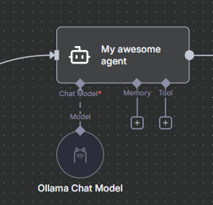
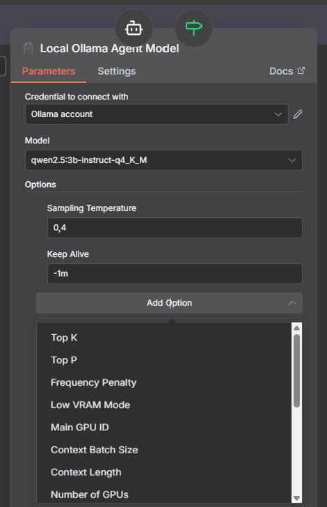
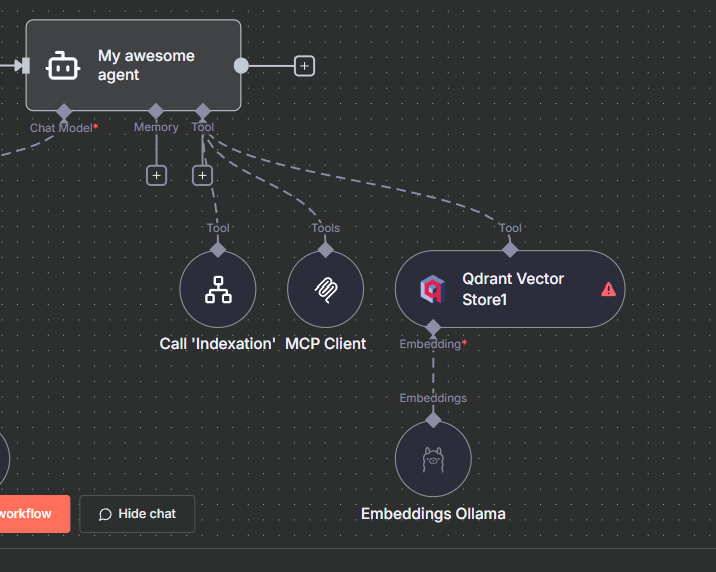
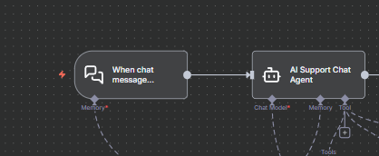
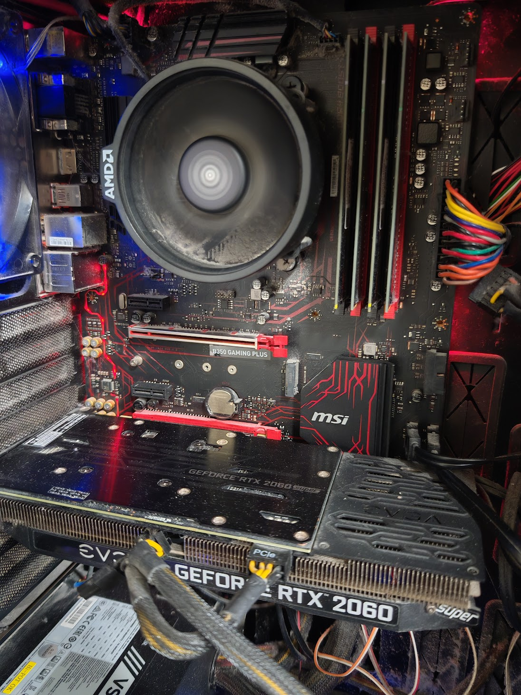

🔧 Présentation de n8n
n-odematio-n
Pourquoi n8n ?
- No-code/Low-code (Workflow visuel)
- Contrôle de vos données
- Open Source 🥨 et en constante évolution (2.4.6)
À quoi ressemble un workflow n8n ?
- Trigger : Déclencheur (webhook, email, cron...)
- Nodes : Actions connectées visuellement
- Variables : Données partagées entre étapes
- Exécution : Flux automatisé de bout en bout
"Tu connais BPMN ?"
Self-hosted ou Cloud ?
🏠 Self-hosted
- Contrôle total
- Données privées
- Personnalisation
- Docker/K8s
☁️ Cloud
- Simplicité
- Maintenance incluse
- Scalabilité
- Support officiel
Cas d'usage classiques
- Automatisation email
- Synchronisation de données
- Rapports automatiques
- Notifications intelligentes (IoT)
- Outils internes
Fonctionnalités clés
- Triggers multiples
- Variables entre étapes
- +400 intégrations
- Gestion d'erreurs
- Credentials sécurisés
Milliers de templates
Prêts à importer et personnaliser !
Assistant GPT
- Aide à la création de workflows
- Résolution de problèmes
- Bonnes pratiques
🤖 Avec les agents IA
Qu'est-ce qu'un agent IA ?
- 🧠 Modèle IA : Le cerveau (Krang)
- 🤖 Agent : Le corps cyborg qui agit
- 📝 Prompt système : Les instructions de base
- 🛠️ Outils : Les complices (Shredder, Bebop, Rocksteady)
Agent = Modèle + Prompt + Outils
Le cerveau qui orchestre tout ! 🧠
AI Agent Node
- Cerveau décisionnel
- Prompts système
- Intégration native
- Planning de tâches
Configuration des Prompts
🎯 Prompt Système
- Définit le comportement
- Contexte permanent
- Rôle de l'assistant
- Contraintes globales
💬 Prompt Utilisateur
- Instructions spécifiques
- Données contextuelles
- Variables dynamiques
- Format de sortie
System: "Tu es un expert technique qui répond de manière claire et précise."
User: "Explique comment {{ $json.technology }} fonctionne en {{ $json.level }} phrases."
Intégration Modèles SaaS
OpenAI
GPT
Streaming, Function calling
Anthropic
Claude
Analyse de documents
Gemini Pro
Multimodal
Azure
OpenAI sur Azure
Conformité entreprise
✅ Configuration simple : API Key + quelques paramètres
Qu'est-ce qu'Ollama ?
- Docker pour l'IA : Conteneurise vos LLMs
- Installation simple : Une commande
- Local first : Vos données restent chez vous
- API compatible : OpenAI-like
curl -fsSL https://ollama.com/install.sh | sh ⚠️
ollama run llama3.2
Intégration Ollama
🎯 Configuration n8n
Base URL: http://ollama:11434 (local)
Base URL: https://your-server.com:11434 (distant)
Model: llama3.2, qwen2.5, mistral, codestral...
Ollama local vs distant
🏠 Ollama Local
- Données privées
- Pas de latence réseau
- Pas de coût API
- GPU/CPU local
☁️ Modèles distants
- Performance optimale
- Toujours à jour
- Scalabilité
- Pay-per-use
"Il faut faire confiance aux modèles distants…"
Le petit hic d'Ollama

- Taille de contexte limitée vs modèles SaaS
- 8K-32K tokens (Ollama) vs 128K-2M tokens (GPT-4)
- Impact sur les conversations longues
- Trade-off : Contrôle vs Performance
Node Agent en action
Configuration simple : Agent connecté à Ollama local, sans outils ni mémoire
Paramètres Ollama
Model Selector
- Adaptation contextuelle
- Basculement automatique
- Optimisation coûts/perf
Mémoire
- Conversation multi-tours
- Vector Store (RAG)
- Variables persistantes
- Historique & apprentissage
Types de mémoire disponibles
Outils disponibles
- Web & APIs
- Fichiers & Bases de données
- Communications
- Autres agents IA
💡 Via MCP ou intégrations natives n8n
MCP (Model Context Protocol)
- Protocole par Anthropic
- ~1 an d'existence
- Standardise les outils pour agents IA
- Talk dédié disponible
🔗 github.com/antoninBr/talk-mcp
Quelques MCP sympa avec n8n
- playwright-mcp
- tavily-mcp-server
- atlassian-mcp-server (meme si integration native existe)
- Votre propre mcp-server
🤯 n8n-mcp
🤖➡️🤖
- Spécialisation par domaine
- Délégation intelligente
- Équilibrage de charge
- Résilience & fallback
Exemple d'outils
Interface Chat : Embedded vs Hosted
🏠 Embedded
- Widget intégré
- Votre design
- Contrôle total
☁️ Hosted
- Page dédiée
- Prêt à l'emploi
- Déploiement rapide
Securité
- Noeud Guardrails (entrée/sortie)
- Pas dans la démo...
Architecture complète
graph TB User[👤 Utilisateur] --> Chat[💬 Interface Chat] Chat --> N8N[🔧 n8n] N8N --> PG[(🗄️ PostgreSQL)] N8N --> Agent[🤖 AI Agent] Agent --> Ollama[🧠 Ollama LLMs locaux] Agent --> Ollama_Remote[🧠 Ollama LLMs distants] Agent --> VectorDB[🔍 Vector Stores] Agent --> MCP[🎭 MCP Servers] Agent --> API[🧠 LLMs SaaS] subgraph "🐳 Docker Compose Stack" Chat N8N PG Ollama VectorDB MCP Agent end style User fill:#4fc3f7,stroke:#01579b,stroke-width:2px,color:#000 style Chat fill:#ba68c8,stroke:#4a148c,stroke-width:2px,color:#000 style N8N fill:#81c784,stroke:#2e7d32,stroke-width:2px,color:#000 style Agent fill:#ffb74d,stroke:#ef6c00,stroke-width:2px,color:#000 style Ollama fill:#f06292,stroke:#c2185b,stroke-width:2px,color:#000 style API fill:#f06292,stroke:#c2185b,stroke-width:2px,color:#000 style MCP fill:#f06292,stroke:#c2185b,stroke-width:2px,color:#000 style VectorDB fill:#aed581,stroke:#689f38,stroke-width:2px,color:#000 style PG fill:#64b5f6,stroke:#1976d2,stroke-width:2px,color:#000
🚀 Démo live : n8n sandbox
Docker compose : stack complet
services:
postgres:
image: postgres:15
...
n8n:
build: ./n8n
environment:
...
...
depends_on:
- postgres
ollama:
image: ollama/ollama:latest
...
🐳 Docker Model Runner
# Version avec Docker Model Runner (Docker Compose)
services:
n8n:
build: ./n8n
models:
- llm
models:
llm:
model: ollama/llama3.2:3b
runtime: ollama
✨ Avantages
- Syntaxe simplifiée
- Liaison automatique n8n ↔ modèle
- Configuration centralisée
- Déploiement unifié
⚠️ Limitations
- Docker Compose uniquement
- Fonctionnalité récente
- Documentation limitée
- Fallback classique recommandé
L'avenir ? Docker + Google Cloud Run
Les workflows
- 🗂️ Indexation.json : Traitement de documents
- 💬 Chat.json : Chatbot avec RAG
Mon setup Ollama
ASUS Zenbook
- Ryzen 7
- 16 Go RAM
- SSD
- Radeon intégré 😢
Modèles légers uniquement
Battlestation
- Ryzen 5
- 32 Go RAM
- SSD NVMe
- 2 * GeForce RTX 2060 (20 Go vRAM)
Demo time! 🎬
Démarrage de la stack
# Lancement des services
./start.sh --import --init-collections --setup-ollama
❓ Conclusion et questions
Ce qu'on a vu
- ✅ n8n comme chef d'orchestre
- ✅ Intégration IA locale (Ollama) et distante
- ✅ Agents avec mémoire et outils
- ✅ Protocole MCP pour étendre les capacités
- ✅ Démo concrète avec workflows
Pour aller plus loin
- 🔗 Sources : GitHub avec docker-compose
- 📚 Documentation : n8n.io et ollama.ai
- 🌐 Communauté : Discord n8n et forums
- 🚀 Évolutions : Nouveaux nodes IA en permanence
Merci EPITECH
Questions ? 🤔
Merci pour votre attention !
bio.yaml
Contact & Sources
Sources & Code
📧 a.brugnot@groupeonepoint.com
🏢 Onepoint - Nantes